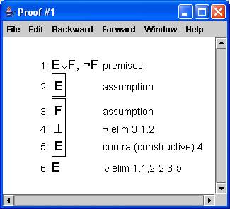

Descompactar o arquivo regras na pasta exemplos do JAPE. Para fazer uma prova utilizando dedução natural, selecione a opção do menu “File” e “Open...”. Na janela que se abrirá, escolha a pasta “examples”, depois a pasta “natural_deduction_logic_in_computer_science” e escolha I2L.jt. Em seguida, faça o mesmo procedimento e escolha o arquivo ndlics.jp.
Para entender melhor, siga os passos da seguinte prova:
• Selecione a linha EvF, ~F |- E na janela de conjecturas;
• Clique o botão “Prove”;
• Selecione EvF (linha 1);
• No menu, escolha a opção “v elim (makes assumptions)” no item Forward ;
• Selecione ~F (linha 1) e F (linha 3);
• No menu, escolha a opção “ ~ elim” também no item Forward ;
• Selecione E (linha 5);
• No menu, escolha a opção “contra (construtive)” no item Backward .
Com isso, será exibida a seguinte tela com o resultado da prova:
|  |